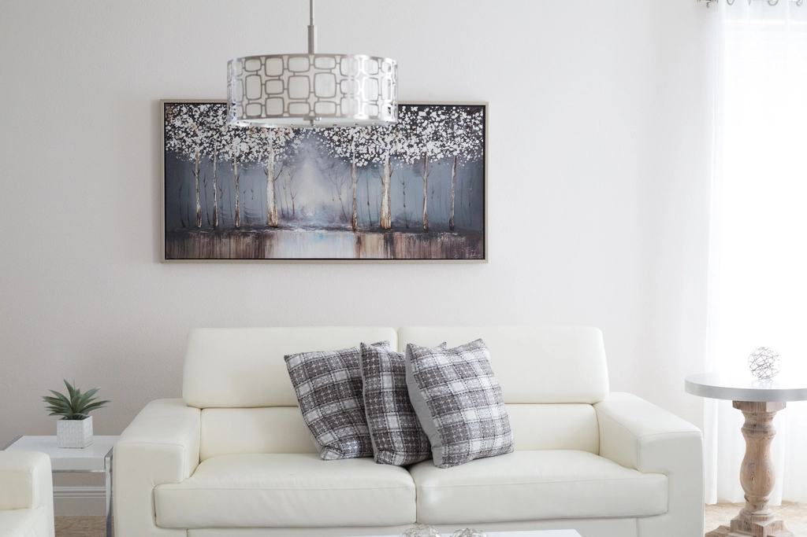

Limpar o sofá em casa, com máquina profissional
Quando foi a última vez que lavou o sofá? Aspirar não conta. O aspirador tira o que está à superfície e deixa ficar o resto: o suor, a gordura das mãos, as migalhas que se enterraram na espuma, o pó que se acumula ano após ano. É esse reservatório de sujidade que uma máquina de extração remove.

Como funciona a limpeza a extração
A máquina que alugamos é uma Kärcher Puzzi, o mesmo tipo de equipamento que as empresas de limpeza profissional usam. Injeta água com detergente dentro da fibra do tecido e volta a aspirá-la de imediato, trazendo com ela a sujidade que estava lá dentro. Não é vapor nem espuma seca: é lavagem a sério, com a água a sair visivelmente suja para o depósito de recuperação.
O resultado nota-se à vista e ao cheiro. Manchas de uso, zonas escurecidas nos braços e assentos e odores acumulados saem na primeira passagem na maioria dos casos.
O que consegue limpar
- Sofás de tecido de todos os tamanhos, incluindo chaise longue e sofás de canto
- Poltronas, cadeirões e puffs
- Almofadas de assento e de encosto
Uma nota honesta: a máquina não serve para pele, camurça, veludo nem seda. Estes materiais não devem levar água. Na dúvida, mande-nos uma fotografia da etiqueta do sofá pelo WhatsApp e nós dizemos se pode ou não.
Como se lava corretamente
- Aspire primeiro o sofá a seco, com o seu aspirador normal, para tirar migalhas e pelos soltos.
- Encha o depósito com 4 litros de água morna e 1 pastilha de detergente. Chega para um sofá inteiro.
- Borrife o tecido todo com a máquina e deixe o detergente atuar uns 5 minutos, sem deixar secar.
- Extraia em faixas direitas e sobrepostas, devagar e a puxar para si. Em zonas muito sujas, cruze uma segunda passagem e termine só a aspirar, para tirar o máximo de água.
As instruções completas, com imagens, estão sempre disponíveis no site e explicamos tudo outra vez na entrega, em dois minutos. Quem sabe usar um aspirador sabe usar isto.
Quanto tempo demora a secar
Entre quatro e oito horas, conforme o tecido e o arejamento da divisão. No verão, com as janelas abertas, seca muito mais depressa.
Quanto custa
O aluguer custa 40€ por um dia inteiro, com entrega e recolha incluídas até 5 km do centro de Viseu. Num dia dá para fazer o sofá, os colchões e ainda o carro. Compare com os 80€ a 150€ que uma empresa cobra só pelo sofá. A tabela completa está na página de preços.
Diga-nos o dia e a morada. Entregamos, mostramos como se usa e vamos buscar quando terminar.
Reservar pelo WhatsAppTambém pode interessar
- Limpeza de colchões: aproveite o mesmo aluguer para lavar os colchões da casa.
- Estofos de automóvel: os bancos do carro limpam-se com o bocal de mão.
- Guias e conselhos: nódoas, odores e truques de secagem.